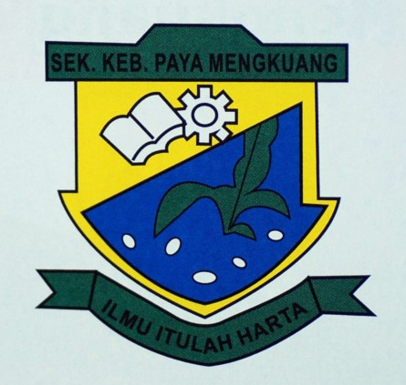
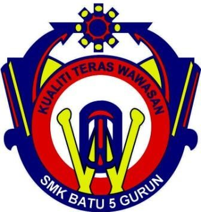

| 
Sekolah Kebangsaan Paya mengkuang |
I am 7 years old, I study at Sekolah Kebangsaan Kampung Paya Mengkuang, Padang Lembu, 08330 Gurun, Kedah. The distance from my home to school was 5km and I used to ride my bike to get there. During my time in primary school, I was selected to be an assistant chief invigilator because of my academic improvement. I was also fond of participating in various competitions, especially in sports like netball. I used to represent the netball team at the district level. I stayed in the same primary school until I completed my UPSR and UPKK exams. | 
UiTM Merbok,Kedah |
I am 13 years old, I study at Sekolah Menengah Kebangsaan Batu 5, Jalan Jeniang, Gurun Kedah (SMKBT5) and the distance is far from my high school which is 7km. When I was in high school I held the position of assistant chief invigilator and I was very active as an emcee for any event. Also, I took literature and business streams when I was in fourth and fifth grade. Therefore, I am close with my classmates in form 4 and 5, since we have been in the same class for 2 years since form 4. Our class 5K1 consists of 21 girls and 4 boys. Each class has a different elective and for our class it is 'Home Science' (SRT) and 'Art Education' (PS) electives. We don't have many people in our class. Therefore, we act like cooperate with each other to strengthen the relationship. |
|
Universiti Teknologi MARA(UiTM) |
In October 2021, I have the opportunity to continue my studies to the diploma level by following the Information Management course at UiTM Kedah for 2 years 6 months (5 semesters). In this part of the course, I have learned about libraries, archives, museums, systems in websites and more. I am grateful to have this course because it is an easy course for me to get a job one day. Furthermore, the distance of my university from home is not so far because it is located in Merbok, Kedah. Therefore, it is easy for me to go back and forth to class. Throughout these 2 years and 6 months, many wonderful experiences have been created in my life in continuing my studies at UiTM Kedah because of many good friends and lecturers who often give guidance. |